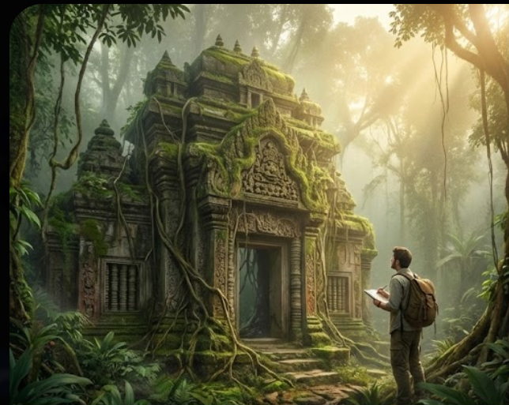
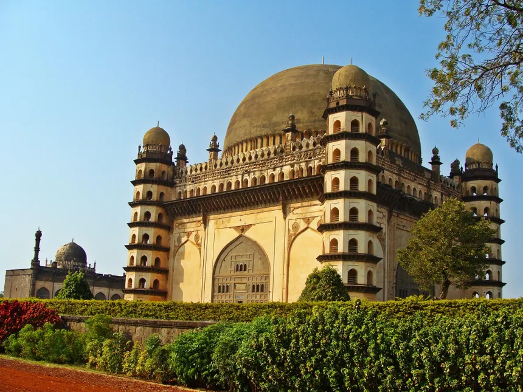

Our Vision & Mission
We believe India's true history lives beyond the famous monuments. Our platform explores, documents, and preserves India's hidden gems through meaningful storytelling.


Documentation
Building India's largest database of lesser-known historical sites with verified information and rich multimedia.
Learn More

Preservation
Creating awareness about heritage sites at risk and supporting conservation efforts through digital storytelling.
Learn More


Exploration
Guiding curious travelers to discover authentic cultural experiences beyond mainstream tourist circuits.
Explore Now